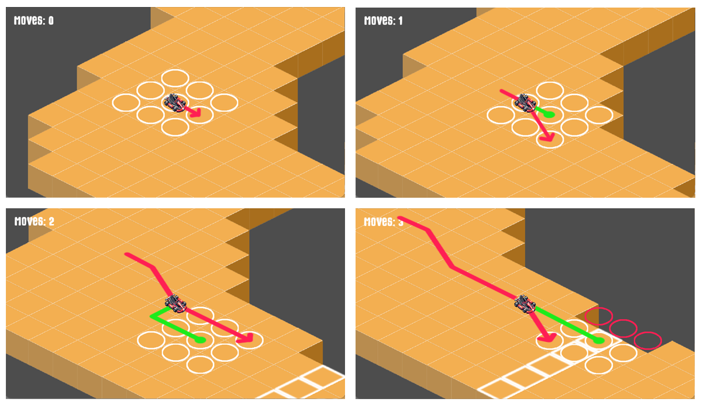

Core Mechanics
Core Mechanics: How Turn-Based Racing Works
A Different Kind of Racing Game
I know that turn-based racing might sound strange at first. But this game isn’t about speed or reflexes—instead, it’s about planning, precision, and strategy. Your ability to control acceleration and trajectory depends entirely on previous moves, requiring forward-thinking and adaptability.
The Basics: Movement & Turns
- The game is grid-based, with each car occupying a single cell.
- A move starts by copying the previous move from the car’s current position—this defines the reference cell for the next move.
- The player can then choose the reference cell or any adjacent cell, as long as it’s available.
- A cell is available if it’s on the track and not occupied by another racer.

This simple system creates a deep, tactical challenge, where players must anticipate their trajectory several turns in advance.
Expanding the Mechanics: Strategy Beyond the Basics
The foundation of Vector Shift is simple, but strategic depth comes from track design and additional gameplay elements.
1. Racing Disciplines: Adjusting the Rules of Motion
Different racing formats demand different driving styles, so the game will modify movement mechanics accordingly:
-
Formula 1: High-Speed Precision
- F1 cars are built for speed and maintaining the racing line.
- In F1 races, the reference cell’s movement options expand by two cells forward instead of one, but only in the direction of travel.
- This means higher acceleration and braking, but less flexibility for sharp turns.
-
Rally & GT Racing: Specialized Mechanics
- Similar tweaks will be implemented to ensure Rally and GT racing reflect their unique characteristics, requiring different strategies to master.
2. Wild Card Cells & Power-Ups: Dynamic Track Elements
The grid-based system allows for interactive track elements that affect decision-making:
-
Wild Card Cells
- Special tiles that modify the next move, such as:
- Speed boosts (temporary acceleration increase).
- Slippery patches (momentum carries farther than expected).
- Restricted movement (forcing a limited choice next turn).
- Special tiles that modify the next move, such as:
-
Power-Ups
- Players can collect and use power-ups strategically, including:
- Turbo Boost – Temporary speed increase.
- Grip Enhancement – Better control in turns.
- Slipstream Effect – Extra acceleration when trailing an opponent.
- Players can collect and use power-ups strategically, including:
3. Car Upgrades & Skills: Customizing Your Driving Style
Winning races should feel rewarding, so players will be able to upgrade their car and develop unique driving styles:
-
Customizable Driving Styles
- Players can enhance specific attributes at the cost of others, such as:
- Control Specialist – Improved lateral movement but reduced acceleration.
- Speed Demon – Greater forward acceleration but weaker braking and turning.
- Balanced Driver – A steady mix of all attributes.
- Players can enhance specific attributes at the cost of others, such as:
-
Upgrade System
- Players can earn permanent improvements by winning races, such as:
- Better acceleration and braking.
- Improved handling on certain track types.
- Resistance to track hazards.
- Players can earn permanent improvements by winning races, such as:
These mechanics add long-term progression, ensuring player choices matter.
What’s Next
You might have noticed that this blog is missing something important: graphics. That’s because I haven’t yet decided on the game’s visual style. I have a few ideas in mind, and I’ll explore them in a future post.
In the meantime, I’m already working on prototyping the gameplay, refining the core mechanics to ensure they feel engaging and intuitive.
As for my next post, I haven’t settled on which aspect to cover first—so stay tuned! 🚀